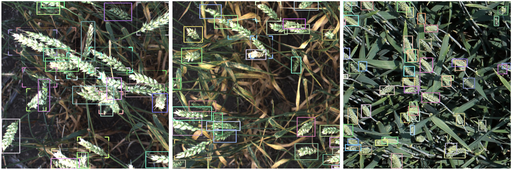

Custom Parser

Custom Parser - Single Object Type
The Dataset
This tutorial uses the Global Wheat Detection dataset which can be downloaded from Kaggle.
The aim is to detect a single object class: the wheat head.
Installation and Imports
!wget https://raw.githubusercontent.com/airctic/icevision/master/install_colab.sh
!bash install_colab.sh
from icevision.all import *
Uploading the Data from Kaggle
You will need your personal Kaggle API token (kaggle.json). If you don't have one yet, go to your Kaggle account. Once inside your Account, under the 'API' portion, click on 'Create New API Token'.
from google.colab import files
files.upload()
# kaggle.json
! mkdir -p ~/.kaggle/
! cp /kaggle.json ~/.kaggle/
! chmod 600 ~/.kaggle/kaggle.json
! pip install --upgrade --force-reinstall --no-deps kaggle
! kaggle competitions download -c global-wheat-detection
! unzip /content/global-wheat-detection.zip -d /content/global-wheat-detection > /dev/null
!ls
Saving kaggle.json to kaggle (1).json
{'kaggle.json': b'{"username":"marialrodriguez","key":"e3f17a764b333ed8cc29ecaf8d2b6b4e"}'}
'=5.1' global-wheat-detection install_colab.sh kaggle.json
gdrive global-wheat-detection.zip 'kaggle (1).json' sample_data
Change Directories to allow a more direct route
%cd global-wheat-detection
!ls # pwd, folders
/content/global-wheat-detection
'=5.1' kaggle.json train
checkpoints models train.csv
global-wheat-detection.zip sample_submission.csv
install_colab.sh test
Quick Exploration of the compiled annotations in the CSV file
import pandas as pd
df = pd.read_csv('train.csv')
df.head()
| image_id | width | height | bbox | source | |
|---|---|---|---|---|---|
| 147790 | 5e0747034 | 1024 | 1024 | [134.0, 228.0, 141.0, 71.0] | arvalis_2 |
| 147791 | 5e0747034 | 1024 | 1024 | [430.0, 13.0, 184.0, 79.0] | arvalis_2 |
| 147792 | 5e0747034 | 1024 | 1024 | [875.0, 740.0, 94.0, 61.0] | arvalis_2 |
df.info()
df.image_id.nunique()
df.source.unique().tolist()
<class 'pandas.core.frame.DataFrame'>
RangeIndex: 147793 entries, 0 to 147792
Data columns (total 5 columns):
# Column Non-Null Count Dtype
--- ------ -------------- -----
0 image_id 147793 non-null object
1 width 147793 non-null int64
2 height 147793 non-null int64
3 bbox 147793 non-null object
4 source 147793 non-null object
dtypes: int64(2), object(3)
memory usage: 5.6+ MB
3373
['usask_1',
'arvalis_1',
'inrae_1',
'ethz_1',
'arvalis_3',
'rres_1',
'arvalis_2']
-
The dataset has 147,793 entries from 3,373 images.
-
An image may contain more than one object.
-
The filename 'image_id' does not have a '.jpg' extension yet, and will need to be addressed during parsing to correspond with the name for each image in the train folder.
-
The image size is given in 'width' and 'height'.
-
The bounding box coordinates are given in 'bbox' and is formatted as [xmin, ymin, box width, box height].
-
The 'source' likely pertains to instution source for the image, which is not relevant for this study.
Establishing Paths
Path('./').ls()
Path('train').ls()
# 3,422 images
data_dir = Path('/content/global-wheat-detection')
class_map = ClassMap(['wheat'])
class_map
(#10) [Path('=5.1'),Path('checkpoints'),Path('global-wheat-detection.zip'),Path('train.csv'),Path('train'),Path('install_colab.sh'),Path('sample_submission.csv'),Path('models'),Path('kaggle.json'),Path('test')]
(#3422) [Path('train/cbbc58a4c.jpg'),Path('train/c2d23766d.jpg'),Path('train/a93b2e119.jpg'),Path('train/d9a2181ed.jpg'),Path('train/b2fbd25ac.jpg'),Path('train/900d273d2.jpg'),Path('train/77222a135.jpg'),Path('train/f7d780303.jpg'),Path('train/5a9a55ae5.jpg'),Path('train/19f4faf0f.jpg')...]
<ClassMap: {'background': 0, 'wheat': 1}>
Parser
The template will help formulate the custom parser.
template_record = ObjectDetectionRecord()
Parser.generate_template(template_record)
class WheatHeadParser(Parser):
def __init__(self, template_record, data_dir):
super().__init__(template_record=template_record)
self.data_dir = data_dir
self.df = pd.read_csv(data_dir/'train.csv')
self.class_map = ClassMap(['wheat'])
def __iter__(self) -> Any:
for o in self.df.itertuples():
yield o
def __len__(self) -> int:
return len(self.df)
def record_id(self, o) -> Hashable:
return o.image_id
def parse_fields(self, o, record, is_new):
if is_new:
filepath = self.data_dir / 'train' / f'{o.image_id}.jpg'
record.set_filepath(filepath)
record.set_img_size(ImgSize(width = o.width, height = o.height))
record.detection.set_class_map(self.class_map)
record.detection.add_bboxes([BBox.from_xywh(*np.fromstring(o.bbox[1:-1], sep=","))])
record.detection.add_labels(['wheat'])
parser = WheatHeadParser(template_record, data_dir)
train_records, valid_records = parser.parse()
show_record(train_records[0], figsize = (10,10), display_label=False )
class MyParser(Parser):
def __init__(self, template_record):
super().__init__(template_record=template_record)
def __iter__(self) -> Any:
def __len__(self) -> int:
def record_id(self, o: Any) -> Hashable:
def parse_fields(self, o: Any, record: BaseRecord, is_new: bool):
record.set_filepath(<Union[str, Path]>)
record.set_img_size(<ImgSize>)
record.detection.set_class_map(<ClassMap>)
record.detection.add_labels(<Sequence[Hashable]>)
record.detection.add_bboxes(<Sequence[BBox]>)
0%| | 0/147793 [00:00<?, ?it/s]
[1m[1mINFO [0m[1m[0m - [1m[34m[1mAutofixing records[0m[1m[34m[0m[1m[0m | [36micevision.parsers.parser[0m:[36mparse[0m:[36m122[0m
0%| | 0/3373 [00:00<?, ?it/s]
train_records[0]
BaseRecord
show_records(train_records[1:4], ncols=3,display_label=False)
common:
- Filepath: /content/global-wheat-detection/train/46630486d.jpg
- Img: None
- Image size ImgSize(width=1024, height=1024)
- Record ID: 46630486d
detection:
- Class Map: <ClassMap: {'background': 0, 'wheat': 1}>
- Labels: [1, 1, 1, 1, 1, 1, 1, 1, 1, 1, 1, 1, 1, 1, 1, 1, 1, 1, 1, 1, 1, 1, 1, 1, 1, 1, 1, 1, 1, 1, 1, 1, 1, 1, 1, 1, 1, 1, 1, 1, 1, 1, 1, 1, 1, 1, 1, 1, 1, 1, 1, 1, 1, 1, 1, 1, 1, 1]
- BBoxes: [<BBox (xmin:955.0, ymin:380.0, xmax:1019.0, ymax:490.0)>, <BBox (xmin:477.0, ymin:532.0, xmax:537.0, ymax:628.0)>, <BBox (xmin:826.0, ymin:950.0, xmax:920.0, ymax:1021.0)>, <BBox (xmin:819.0, ymin:200.0, xmax:908.0, ymax:285.0)>, <BBox (xmin:634.0, ymin:578.0, xmax:750.0, ymax:629.0)>, <BBox (xmin:595.0, ymin:394.0, xmax:671.0, ymax:480.0)>, <BBox (xmin:805.0, ymin:471.0, xmax:866.0, ymax:537.0)>, <BBox (xmin:84.0, ymin:498.0, xmax:116.0, ymax:592.0)>, <BBox (xmin:630.0, ymin:801.0, xmax:719.0, ymax:875.0)>, <BBox (xmin:165.0, ymin:133.0, xmax:226.0, ymax:199.0)>, <BBox (xmin:658.0, ymin:64.0, xmax:690.0, ymax:158.0)>, <BBox (xmin:346.0, ymin:114.0, xmax:400.0, ymax:187.0)>, <BBox (xmin:488.0, ymin:412.0, xmax:569.0, ymax:496.0)>, <BBox (xmin:519.0, ymin:753.0, xmax:579.0, ymax:856.0)>, <BBox (xmin:992.0, ymin:737.0, xmax:1024.0, ymax:821.0)>, <BBox (xmin:233.0, ymin:576.0, xmax:299.0, ymax:621.0)>, <BBox (xmin:9.0, ymin:311.0, xmax:69.0, ymax:364.0)>, <BBox (xmin:471.0, ymin:786.0, xmax:533.0, ymax:857.0)>, <BBox (xmin:921.0, ymin:536.0, xmax:973.0, ymax:576.0)>, <BBox (xmin:311.0, ymin:182.0, xmax:352.0, ymax:260.0)>, <BBox (xmin:734.0, ymin:746.0, xmax:771.0, ymax:820.0)>, <BBox (xmin:610.0, ymin:233.0, xmax:636.0, ymax:314.0)>, <BBox (xmin:425.0, ymin:546.0, xmax:461.0, ymax:615.0)>, <BBox (xmin:368.0, ymin:510.0, xmax:488.0, ymax:543.0)>, <BBox (xmin:0.0, ymin:686.0, xmax:42.0, ymax:733.0)>, <BBox (xmin:393.0, ymin:435.0, xmax:476.0, ymax:473.0)>, <BBox (xmin:694.0, ymin:289.0, xmax:742.0, ymax:327.0)>, <BBox (xmin:363.0, ymin:268.0, xmax:421.0, ymax:309.0)>, <BBox (xmin:166.0, ymin:770.0, xmax:219.0, ymax:838.0)>, <BBox (xmin:136.0, ymin:616.0, xmax:245.0, ymax:666.0)>, <BBox (xmin:774.0, ymin:533.0, xmax:804.0, ymax:598.0)>, <BBox (xmin:315.0, ymin:836.0, xmax:361.0, ymax:875.0)>, <BBox (xmin:445.0, ymin:902.0, xmax:536.0, ymax:940.0)>, <BBox (xmin:439.0, ymin:111.0, xmax:464.0, ymax:189.0)>, <BBox (xmin:161.2, ymin:235.0, xmax:236.8, ymax:269.4)>, <BBox (xmin:312.0, ymin:432.0, xmax:375.0, ymax:493.0)>, <BBox (xmin:522.0, ymin:972.0, xmax:576.0, ymax:998.0)>, <BBox (xmin:378.0, ymin:477.0, xmax:454.0, ymax:515.0)>, <BBox (xmin:398.0, ymin:122.0, xmax:432.0, ymax:199.0)>, <BBox (xmin:577.0, ymin:794.0, xmax:643.0, ymax:853.0)>, <BBox (xmin:109.0, ymin:570.0, xmax:152.0, ymax:610.0)>, <BBox (xmin:118.0, ymin:458.0, xmax:159.0, ymax:495.0)>, <BBox (xmin:357.0, ymin:290.0, xmax:415.0, ymax:341.0)>, <BBox (xmin:143.0, ymin:301.0, xmax:199.0, ymax:322.0)>, <BBox (xmin:234.0, ymin:122.0, xmax:274.0, ymax:188.0)>, <BBox (xmin:235.0, ymin:274.0, xmax:292.0, ymax:326.0)>, <BBox (xmin:845.0, ymin:996.0, xmax:881.0, ymax:1024.0)>, <BBox (xmin:275.0, ymin:50.0, xmax:322.0, ymax:66.0)>, <BBox (xmin:641.0, ymin:884.0, xmax:699.0, ymax:931.0)>, <BBox (xmin:282.0, ymin:395.0, xmax:330.0, ymax:447.0)>, <BBox (xmin:54.0, ymin:740.0, xmax:91.0, ymax:786.0)>, <BBox (xmin:813.0, ymin:898.0, xmax:851.0, ymax:944.0)>, <BBox (xmin:164.0, ymin:534.0, xmax:195.0, ymax:574.0)>, <BBox (xmin:185.0, ymin:835.0, xmax:239.0, ymax:867.0)>, <BBox (xmin:366.0, ymin:508.0, xmax:415.0, ymax:576.0)>, <BBox (xmin:820.0, ymin:243.0, xmax:864.0, ymax:291.0)>, <BBox (xmin:981.0, ymin:802.0, xmax:1020.0, ymax:864.0)>, <BBox (xmin:491.0, ymin:850.0, xmax:541.0, ymax:903.0)>]

show_records(train_records[5:7], display_label=False)
Transforms
presize = 512
image_size = 384
train_tfms = tfms.A.Adapter([*tfms.A.aug_tfms(size=image_size, presize=presize), tfms.A.Normalize()])
valid_tfms = tfms.A.Adapter([*tfms.A.resize_and_pad(size=image_size), tfms.A.Normalize()])
Train and Validation Dataset Objects
train_ds = Dataset(train_records, train_tfms)
valid_ds = Dataset(valid_records, valid_tfms)
samples = [train_ds[1] for _ in range(3)]
show_samples(samples, ncols=3, display_label=False)
Model
selection = 0
extra_args = {}
if selection == 0:
model_type = models.mmdet.retinanet
backbone = model_type.backbones.resnet50_fpn_1x
elif selection == 1:
# The Retinanet model is also implemented in the torchvision library
model_type = models.torchvision.retinanet
backbone = model_type.backbones.resnet50_fpn
elif selection == 2:
model_type = models.ross.efficientdet
backbone = model_type.backbones.tf_lite0
# The efficientdet model requires an img_size parameter
extra_args['img_size'] = image_size
elif selection == 3:
model_type = models.ultralytics.yolov5
backbone = model_type.backbones.small
# The yolov5 model requires an img_size parameter
extra_args['img_size'] = image_size
model = model_type.model(backbone=backbone(pretrained=True), num_classes=len(parser.class_map), **extra_args)
DataLoaders
train_dl = model_type.train_dl(train_ds, batch_size=8, num_workers=2, shuffle=True)
valid_dl = model_type.valid_dl(valid_ds, batch_size=8, num_workers=2, shuffle=False)
model_type.show_batch(first(valid_dl), ncols=2)
Metrics and Learner
metrics = [COCOMetric(metric_type=COCOMetricType.bbox)]
learn = model_type.fastai.learner(dls=[train_dl, valid_dl], model=model, metrics=metrics)
learn.lr_find()
SuggestedLRs(lr_min=0.00043651582673192023, lr_steep=0.04786301031708717)
learn.fine_tune(20, 4e-4, freeze_epochs=1)
| epoch | train_loss | valid_loss | COCOMetric | time |
|---|---|---|---|---|
| 0 | 0.643232 | 0.609152 | 0.236787 | 04:38 |
<div>
<style>
/* Turns off some styling */
progress {
/* gets rid of default border in Firefox and Opera. */
border: none;
/* Needs to be in here for Safari polyfill so background images work as expected. */
background-size: auto;
}
.progress-bar-interrupted, .progress-bar-interrupted::-webkit-progress-bar {
background: #F44336;
}
</style>
<progress value='14' class='' max='20' style='width:300px; height:20px; vertical-align: middle;'></progress>
70.00% [14/20 1:06:06<28:19]
</div>
| epoch | train_loss | valid_loss | COCOMetric | time |
|---|---|---|---|---|
| 0 | 0.539485 | 0.512883 | 0.329394 | 04:51 |
| 1 | 0.524518 | 0.495535 | 0.346624 | 04:47 |
| 2 | 0.502157 | 0.475722 | 0.369555 | 04:49 |
| 3 | 0.490112 | 0.475499 | 0.365245 | 04:48 |
| 4 | 0.479012 | 0.464658 | 0.375988 | 04:45 |
| 5 | 0.471368 | 0.466564 | 0.378793 | 04:45 |
| 6 | 0.465504 | 0.445768 | 0.400851 | 04:43 |
| 7 | 0.456183 | 0.429268 | 0.409720 | 04:41 |
| 8 | 0.444008 | 0.426961 | 0.418625 | 04:39 |
| 9 | 0.430694 | 0.418965 | 0.421158 | 04:35 |
| 10 | 0.431581 | 0.416741 | 0.429150 | 04:40 |
| 11 | 0.423635 | 0.417259 | 0.428600 | 04:45 |
| 12 | 0.418421 | 0.420164 | 0.428826 | 04:37 |
| 13 | 0.402397 | 0.404999 | 0.436926 | 04:34 |
<div>
<style>
/* Turns off some styling */
progress {
/* gets rid of default border in Firefox and Opera. */
border: none;
/* Needs to be in here for Safari polyfill so background images work as expected. */
background-size: auto;
}
.progress-bar-interrupted, .progress-bar-interrupted::-webkit-progress-bar {
background: #F44336;
}
</style>
<progress value='85' class='' max='85' style='width:300px; height:20px; vertical-align: middle;'></progress>
100.00% [85/85 00:37<00:00 0.4000]
</div>
| epoch | train_loss | valid_loss | COCOMetric | time |
|---|---|---|---|---|
| 0 | 0.539485 | 0.512883 | 0.329394 | 04:51 |
| 1 | 0.524518 | 0.495535 | 0.346624 | 04:47 |
| 2 | 0.502157 | 0.475722 | 0.369555 | 04:49 |
| 3 | 0.490112 | 0.475499 | 0.365245 | 04:48 |
| 4 | 0.479012 | 0.464658 | 0.375988 | 04:45 |
| 5 | 0.471368 | 0.466564 | 0.378793 | 04:45 |
| 6 | 0.465504 | 0.445768 | 0.400851 | 04:43 |
| 7 | 0.456183 | 0.429268 | 0.409720 | 04:41 |
| 8 | 0.444008 | 0.426961 | 0.418625 | 04:39 |
| 9 | 0.430694 | 0.418965 | 0.421158 | 04:35 |
| 10 | 0.431581 | 0.416741 | 0.429150 | 04:40 |
| 11 | 0.423635 | 0.417259 | 0.428600 | 04:45 |
| 12 | 0.418421 | 0.420164 | 0.428826 | 04:37 |
| 13 | 0.402397 | 0.404999 | 0.436926 | 04:34 |
| 14 | 0.399981 | 0.406486 | 0.440906 | 04:38 |
| 15 | 0.395512 | 0.400269 | 0.442585 | 04:37 |
| 16 | 0.389025 | 0.400635 | 0.440688 | 04:37 |
| 17 | 0.388219 | 0.399258 | 0.444396 | 04:40 |
| 18 | 0.388210 | 0.398245 | 0.444733 | 04:36 |
| 19 | 0.386009 | 0.397616 | 0.445394 | 04:34 |
model_type.show_results(model, valid_ds)
from google.colab import drive
drive.mount('/content/gdrive', force_remount=True)
root_dir = Path('/content/gdrive/My Drive/')
fname_model = 'wheat-mmdet_retinanet.pth'
torch.save(model.state_dict(), root_dir/'models'/fname_model)
Mounted at /content/gdrive